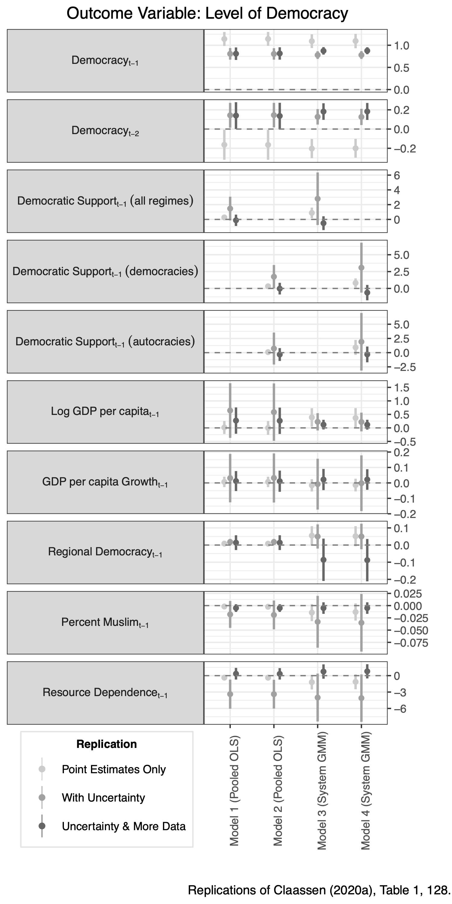

Democracy, Public Support, and Measurement Uncertainty
Tai, Yuehong ‘Cassandra’, Yue Hu, and Frederick Solt. Forthcoming. “Democracy, Public Support, and Measurement Uncertainty.” American Political Science Review.
Other details: Presented at the annual meeting of the Midwest Political Science Association (MPSA), April 2022.
Abstract
Do democratic regimes depend on public support to avoid backsliding? Does public support, in turn, respond thermostatically to changes in democracy? Two prominent recent studies (Claassen 2020a, 2020b) reinvigorated the classic hypothesis on the positive relationship between public support for democracy and regime survival—and challenged its reciprocal counterpart—by using a latent variable approach to measure mass democratic support from cross-national survey data. Both studies, however, used only the point estimates of democratic support; we show that incorporating the concomitant measurement uncertainty into these analyses reveals that there is no support for either study’s conclusion. Efforts to minimize the uncertainty by incorporating additional survey data still fail to yield evidence in support of either hypothesis. These results underscore the need both for more nuanced analyses of the relationships between public support and democracy and for taking measurement uncertainty into account when working with latent variables.
Important figure

BibTeX citation
@misc{TaiHuSolt2022,
author={Tai, Yuehong 'Cassandra' and Hu, Yue and Solt, Frederick},
title={Democracy, Public Support, and Measurement Uncertainty},
url={osf.io/preprints/socarxiv/y5fdv},
doi={10.31235/osf.io/y5fdv},
publisher={SocArXiv},
year={2022},
}